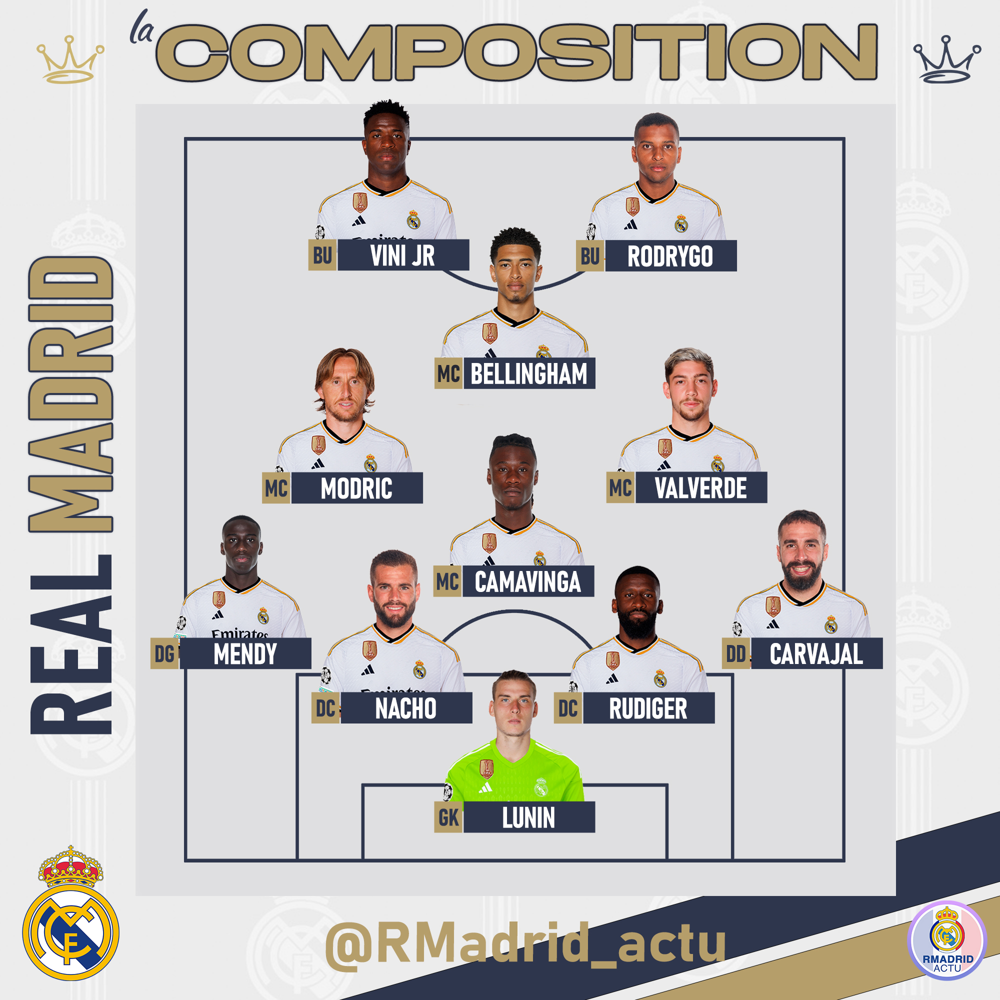

Bienvenue sur le site officiel des Madridistas
Découvrez notre club, son histoire, ses valeurs et bien plus encore.
Histoire du Real Madrid
Fondé en 1902, le Real Madrid est l'un des clubs de football les plus titrés et célèbres au monde. Avec 14 titres de Ligue des Champions, 36 titres de La Liga et de nombreux autres trophées, le club a su s'imposer comme une référence mondiale.
Le stade Santiago Bernabéu, situé à Madrid, est le théâtre des exploits des Blancos et peut accueillir plus de 84 000 supporters.
Nos valeurs
Le Real Madrid est synonyme d'excellence, de passion et de respect. Nos valeurs sont ancrées dans chaque action que nous menons, que ce soit sur le terrain ou en dehors. La formation des jeunes, la recherche de la performance et l'engagement envers nos supporters sont au cœur de notre philosophie.
Le 11 type
@RMadrid_actu sur X
(Composition du match Real Madrid vs Atlético de Madrid le 18 Janvier 2024 en Coupe du Roi)
Calendrier des matchs
Consultez le calendrier pour connaître les dates des prochains matchs.
Chants des supporters
Rejoignez-nous dans les tribunes et découvrez les chants emblématiques des Madridistas qui résonnent dans tout le stade Santiago Bernabéu.